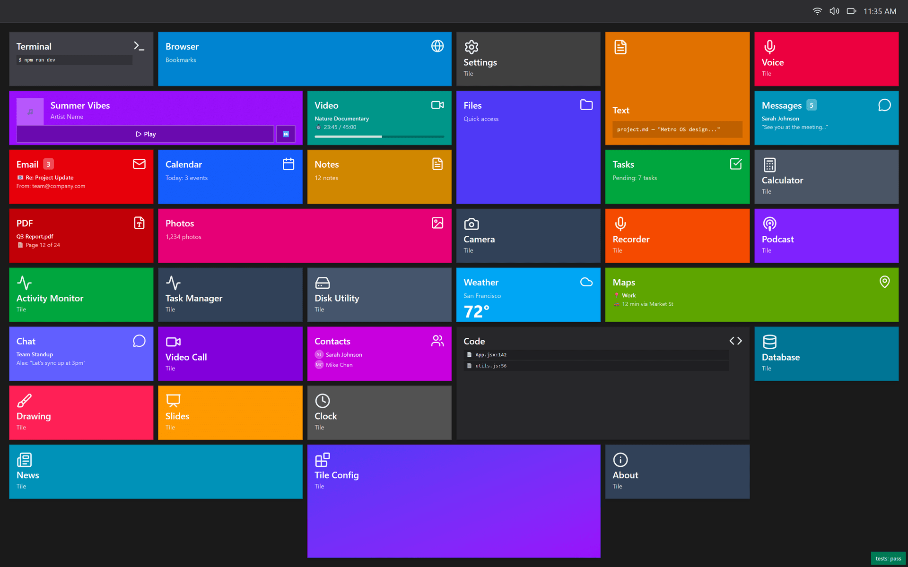
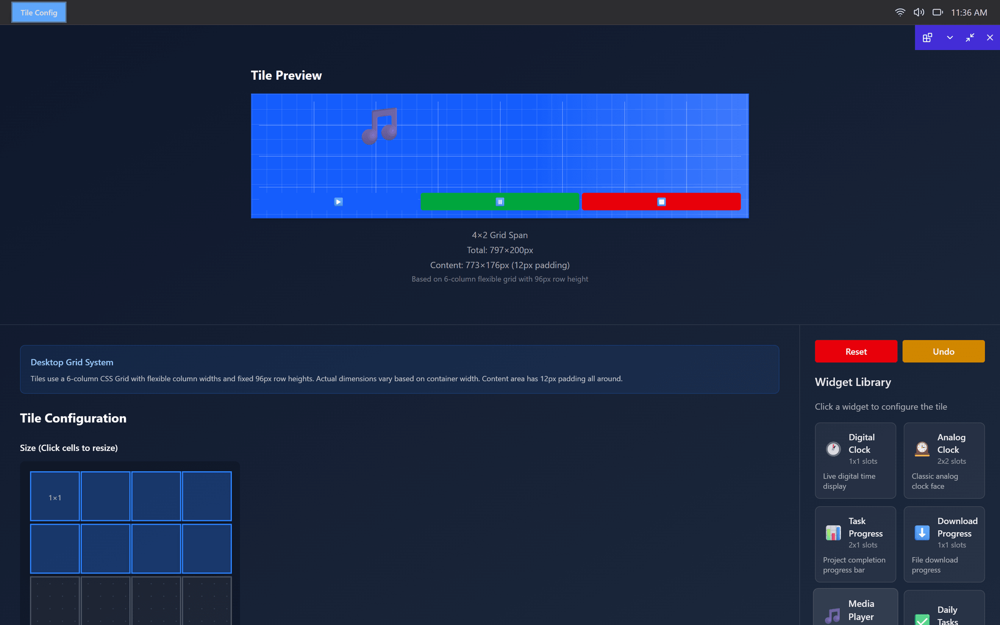
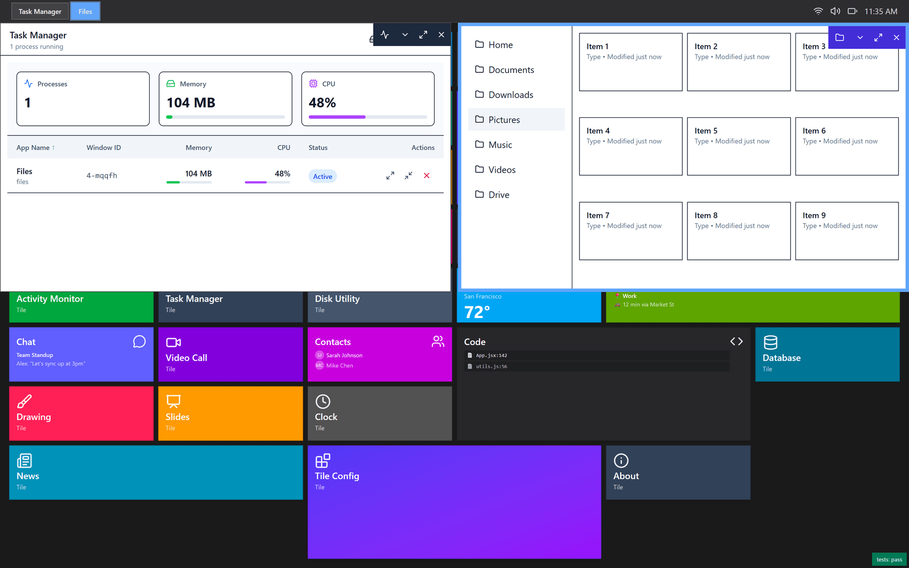
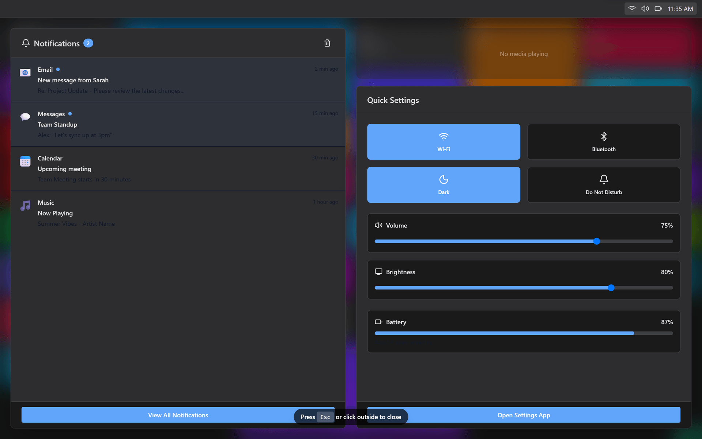

app.launch
Tiles are the launcher.
There are no icons. Every app is a colored tile that carries its own state — unread counts, now playing, the next calendar entry, a file path — and updates in place while you look at it. Right-click to resize or pin; long-press to enter edit mode. The grid is six columns of 96-pixel rows, and tiles claim spans of it.

tile.longPress
A tile is a format, not a decoration.
The tile configurator treats a tile as a layout problem with a budget. Pick a span and it reports the exact geometry; the span buys a number of widget slots, and each widget spends them. A 1×1 tile has no slots and says so. Clocks, progress bars, a media player and a task list are all fitted against the same accounting.

- grid
- 6 flexible columns, 96px rows
- 1×1 tile
- 193 × 96px, 169 × 72 content
- 4×2 tile
- 797 × 200px, 8 widget slots
- padding
- 12px, all four sides
window.snap
Windows, with a process table behind them.
Apps open into draggable windows that minimize, maximize and snap to halves and quadrants — the snap geometry is its own state machine, with smoke tests over the rectangles it produces. Task Manager reads the live window list, so every open app shows up with a window ID and can be focused, minimized or killed from the table.

notification.new
One place for everything the system wants to say.
The action center takes the whole screen: notifications on the left with per-app icons and read state, media transport and quick settings on the right. Toggles and sliders publish to the same bus the apps listen on — switching to dark here is the same event the settings app fires.

Under the shell
The apps are tenants. The system is the project.
Most of the code is not in the apps — it is in the services they sit on. Anything an app needs from the system, it gets by publishing or subscribing, and what it is allowed to do is declared up front in a manifest.
Event bus
src/utils/eventBus.js
Namespaced pub/sub — window, media, notification, taskbar, tile and context-menu topics.
State machines
window · snap · contextMenu
Window lifecycle, snap-zone selection and menu state are explicit transitions, not scattered booleans.
App manifests
src/config/manifests.js
Per-app permissions (network, storage, camera, mic), features, and instance limits.
Theme engine
src/ThemeContext.jsx
Accent, background, surface, text and border tokens with six presets and a light/dark switch.
Snap geometry
src/utils/geometry.js
Halves, quadrants and edge targets computed from the viewport, covered by smoke tests at boot.
Error boundaries
src/components/ErrorBoundary.jsx
A crashing app takes down its own window, not the desktop around it.
Run it
Clone, install, boot.
Vite dev server on port 5173. No backend, no accounts, no build step beyond the bundler.
# get it running locally git clone https://github.com/monstercameron/Modern_os.git cd Modern_os npm install npm run dev # rebuild this site's live demo npm run build:pages
Status
What's finished and what isn't.
The shell is the mature half. The app layer is deliberately thin — most tiles open a placeholder while the system underneath them gets built out.
Working
- Tile grid with live content and resize
- Window manager: drag, snap, minimize, maximize
- Taskbar, action center, quick settings
- Theme engine with six presets
- Task Manager over the real window list
- Tile configurator with widget slots
In progress
- 13 of 35 apps render real content
- Settings: only Personalization is wired
- Theme tokens don't reach every app interior
- Several bus topics publish to no subscriber
Next
- Take one app end to end on every service
- Wire tile context-menu actions to handlers
- Virtual desktops and window grouping
- Fill out the remaining 22 placeholders